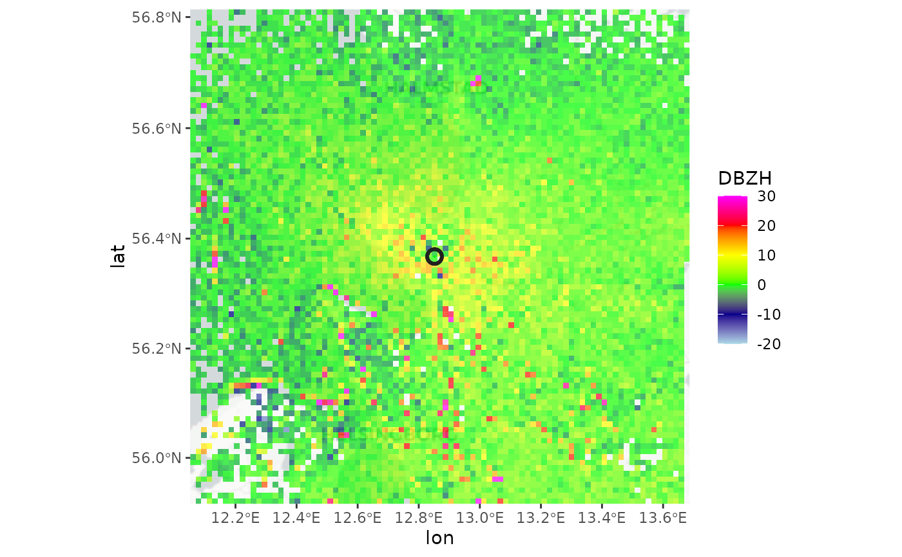

Create a composite of multiple plan position indicators (ppi)
Source: R/composite_ppi.R
composite_ppi.RdCombines multiple plan position indicators (ppi) into a single
ppi. Can be used to make a composite of ppi's from multiple
radars.
Usage
composite_ppi(
x,
param = "all",
nx = 100,
ny = 100,
xlim,
ylim,
res,
crs,
raster = NA,
method = "max",
idp = 2,
idw_max_distance = NA,
coverage = FALSE
)Arguments
- x
A list of
ppiobjects.- param
Character (vector). One or more parameter name(s) to composite. To composite all available scan parameters use
all(default).- nx
number of raster pixels in the x (longitude) dimension
- ny
number of raster pixels in the y (latitude) dimension
- xlim
x (longitude) range
- ylim
y (latitude) range
- res
numeric vector of length 1 or 2 to set the resolution of the raster (see res). If this argument is used, arguments
nxandnyare ignored. Unit is identical toxlimandylim.- crs
character or object of class CRS. PROJ.4 type description of a Coordinate Reference System (map projection). When 'NA' (default), an azimuthal equidistant projection with origin at the radar location is used. To use a WSG84 (lat,lon) projection, use crs="+proj=longlat +datum=WGS84"
- raster
(optional) RasterLayer with a CRS. When specified this raster topology is used for the output, and nx, ny, res arguments are ignored.
- method
Character (vector). Compositing method(s), either
mean,min,maxoridw. To apply different methods for each of the parameters, provide a vector with the same length asparam.- idp
Numeric. Inverse distance weighting power.
- idw_max_distance
Numeric. Maximum distance from the radar to consider in inverse distance weighting. Measurements beyond this distance will have a weighting factor of zero.
- coverage
Logical. When
TRUE, adds an additionalcoverageparameter to theppiindicating the number ofppis covering a single composite pixel.
Details
The function can combine multiple ppis of different scan elevations of the
same radar or ppis of different radars. The coordinates of the returned
ppi object are in the WGS84 datum, unless a different crs is provided. If
only res is provided, but no crs is set, res is in meters and the
origin of the composite ppi is set to the mean(lat, lon) location.
The method parameter determines how values of different ppis at the same
geographic location are combined:
mean: Compute the average value.max: Compute the maximum value. Ifppis are of the same radar and the same polar volume, this computes a max product, showing the maximum detected signal at that geographic location.min: Compute the minimum value.idw: This option is useful primarily when compositingppis of multiple radars. Performs an inverse distance weighting, where values are weighted according to 1/(distance from the radar)^idp.
Argument method determines how values of different ppi's at the same
geographic location are combined.
mean: Compute the average valuemax: Compute the maximum value. If ppi's are of the same radar and the same polar volume, this computes a max product, showing the maximum detected signal at that geographic location.min: Compute the minimum valueidw: This option is useful primarily when compositing ppi's of multiple radars. Performs an inverse distance weighting, where values are weighted according to 1/(distance from the radar)^idp
The coordinates system of the returned ppi is a WGS84
(lat, lon) datum, unless a different crs is provided. If only
res is provided, but no crs is set, res is in
meter units and the origin of the composite ppi is set to the
mean (lat, lon) location.
This function is a prototype and under active development
Examples
# Locate and read the polar volume example file
# \donttest{
pvolfile <- system.file("extdata", "volume.h5", package = "bioRad")
pvol <- read_pvolfile(pvolfile)
# Calculate a ppi for each elevation scan, 1000m grid resolution
ppis <- lapply(pvol$scans, project_as_ppi, grid_size=1000)
# Overlay the ppis, calculating the maximum value observed
# across the available scans at each geographic location
composite <- composite_ppi(ppis, method = "max", res=1000)
# Plot the calculated max product on the basemap
if (all(sapply(c("ggspatial","prettymapr", "rosm"), requireNamespace, quietly = TRUE))) {
map(composite)
}
#> Zoom: 8
#> Fetching 4 missing tiles
#>
|
| | 0%
|
|================== | 25%
|
|=================================== | 50%
|
|==================================================== | 75%
|
|======================================================================| 100%
#> ...complete!

# }